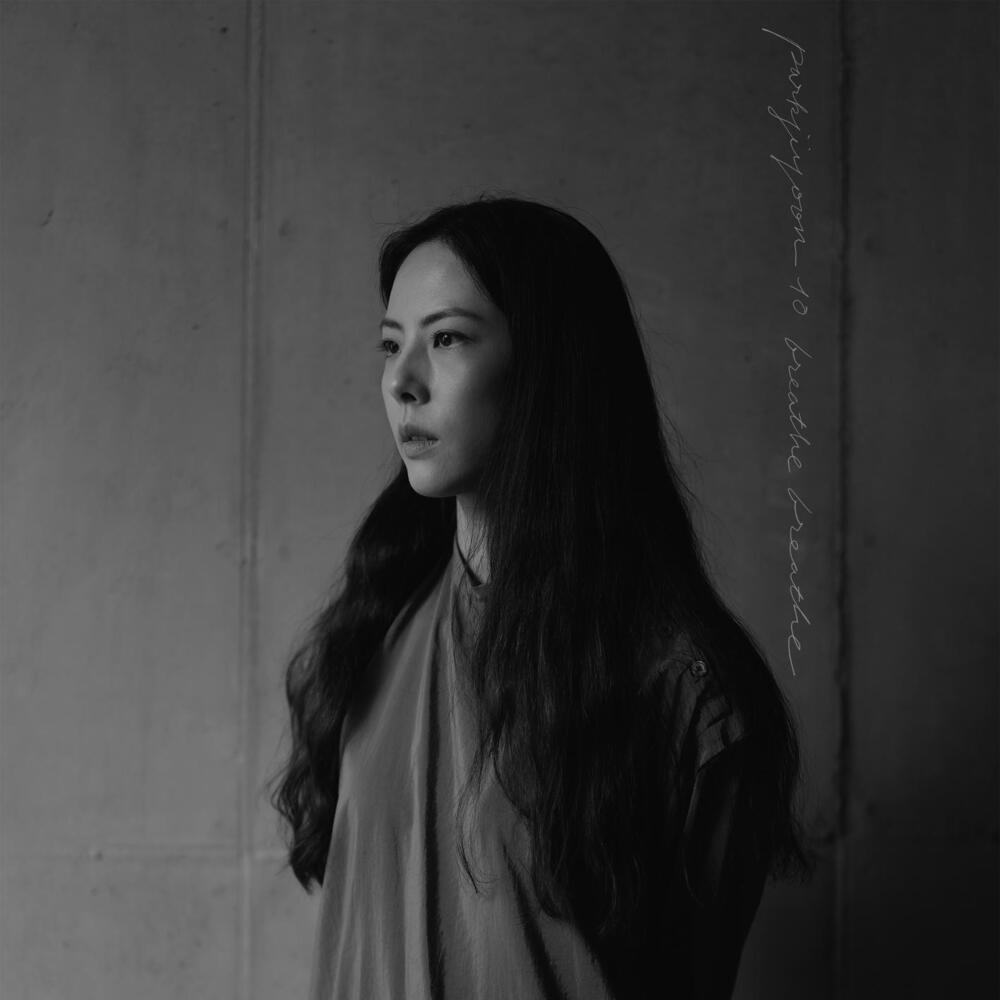

안녕하세요 라보엠입니다.
2023년 12월 14일 박지윤의 10집! 무려 10번째 앨범이 발표되었습니다. 이번 앨범은 1997년 1집 하늘색 꿈 2000년 4집 성인식, 환상, 2012년 8집 나무가 되는 꿈, 그리고 2017년 9집 이후 발표한 6년 9개월만의 정규앨범입니다. 8집 나무가 되는 꿈의 작곡으로 참여했던 노리플라이의 권순관이 10년만에 사랑하게 해요라는 곡의 작곡으로 함께 했습니다.
박지윤 10집 사랑을 사랑하고 싶어 MV
사랑을 사랑하고 싶어 Release Note
Vocal Artist : parkjiyoon
Performance Artist : Park Seungwoo
[Music credit]
Composed & lyrics by HEN
Arrange by Moon Seolim
String arranged by Kim Kun
Piano by HEN
Strings by Budapest Orchestra
Guitar by Lim Heonil
Bass by Kim Hyungmin
Drums Moon Seolim
Synthesizer Moon Seolim
Chorus by parkjiyoon
Produced by parkjiyoon
[Video credit]
Production : wwhh
Director : Woonghui [wwhh]
1st Assistant Director : Kim Jooyeol
2nd Assistant Director : Yu Dongjae
Producer : Jang Jungik
Director of Photography : Honda Hiro
Edit & Color : wwhh
Production Manager : Yoon Jaeeun, S.Batbileg, R.Enkhbayar, M.Otgontsagaan
사랑을 사랑하고 싶어 - 가사
사랑은 나의 빛이었네,
사랑은 나의 노래였지.
사랑은 나의 웃음이었고,
사랑은 나의 내일이었네.
이제 난 사랑을 알았기에
주고받는 기쁨과
사랑으로 가득 찬
마음을 알게 됐지.
그 빛나는 것들을.
할 수만 있다면,
그럴 수 있다면,
다시 사랑을 사랑하고
사랑을 믿고 싶어.
하지만 이별도 알았기에,
서로를 잃는 아픔도
그 모든 걸 알았기에,
아무것도 시작할 수
그 누구도 사랑할 수
그 무엇도 사랑할 수
없게 되어버렸네.
사랑을 사랑할 수
없게 되어버렸네.
사랑은 나의 빛이었네
사랑은 나의 노래였지.
박지윤 10집 사랑하게 해요 - 권순관 작곡
사랑하게 해요 가사
저 멀리 보이지 않는 지평선 너머엔
어떤 일들이 일어날까?
저 멀리 보이지 않는 지평선 너머엔
어떤 일들이 일어날까?
노을이 꽃피우는 건
서로 다른 우리의 마음도
하나로 이어주려는 거야.
아름다워서,
하루를 시작해 주는 태양,
비 맞은 땅의 소리들,
빛이 되어 내게 말해요.
계절 따라 마음에 쓰여지는 사랑에
다 제자리로 돌아가요.
가만히 눈을 감으면 보이는 것들
바람이 되어 날아와
메마른 길을 따라서 걷다 보면
서로의 마음을 하나 둘 이해하게 될 거야.
사랑을 배우니까,
하루를 시작해 주는 태양,
비 맞은 땅의 소리들,
빛이 되어 내게 말해요.
계절 따라 마음에 쓰여지는 사랑에
다 제자리로 돌아가요.
길어진 겨울의 밤도 밝게 비춰주는 달
혼자가 익숙해지면 다시 차올라
가을의 작은 떨림에도
짙게 물들어진 사랑에
다 제자리로 모두
또다시 사랑하게 해요.
8집 나무가 되는 꿈에서 작곡으로 참여했던 권순관과 함께 12년만에 10집에서 사랑하게 해요의 작곡가로 다시 함께 작업한 이야기도 나누었습니다.
박지윤 10집 숨을 쉰다 간략 후기
데뷔 26년차 이제 10집이라는 중견 가수가 된 박지윤은 이번 10집에서 하고 싶은, 그리고 할 수 있는 이야기를 앨범에 그대로 다 풀어냈습니다. 특히 사랑에 대한 이야기가 많은데, 타이틀곡 사랑을 사랑하고 싶어에 그녀의 메시지가 다 담겨있습니다.
사랑은 나의 빛
사랑은 나의 노래
사랑의 나의 웃음
사랑은 나의 내일
사랑에는 필연적으로 따라오는 이별도 있어서 그 쓸쓸함에 대한 생각도 가사와 그녀의 목소리에 담겨 있습니다. 타이틀곡도 좋지만, 노리플라이를 애정하는 저는 사랑하게 해요 이 곡에 더 마음이 갔습니다. 8집의 인연을 10년이 지난 후에 서로 성장하여 다시 이어가는 둘의 작업이 멋지게 느껴졌습니다.
6년만에 10집으로 더 성숙한 앨범으로 돌아온 박지윤의 10집 숨을 쉰다 추천 드립니다.
